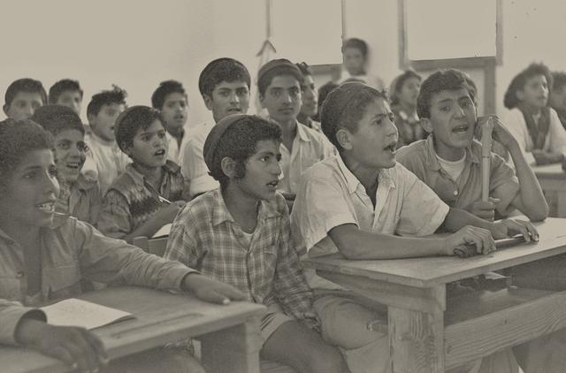
שער הארכיון · הסיפור של הקהילות שהקימו כאן בית
למשל: 1950 · מפעלי שער הנגב · 7 באוקטובר
גלו את הסיפור של שער הנגב
אוצרות הארכיון
כרזות ותצלומים מאוספי הקהילות והמועצה
- צעדת הכלניות, צילום ג׳ימי קדושים2006
- הגשש החיוור, ״עובדים עלינו״אמפי שער הנגב · 1979
- להקת גזוז, אמפי שער הנגבאמפי שער הנגב · 1978
- להקת מחול בת-דוראמפיתיאטרון שער הנגב · 1980
- אסיפה בחצר בגביםגבים · 1947
- כוכבי הטלוויזיה, הצגה לילדיםאמפיתיאטרון שער הנגב · 1977
- להקת צליל מכווןאולם קיבוץ דורות · 1976
- הכבש השישה-עשר, יהונתן גפןאמפי שער הנגב · 1982
- יוסי בנאי, ״אני וסימון ומואיז הקטן״אמפיתיאטרון שער הנגב · 1981
- הגשש החיוור, ״קרקר נגד קרקר״אולם דורות · 1983
הקהילה של היום
עשור אחרי עשור
מההתיישבות בנגב המערבי ועד היום. בחרו עשור
רגעים שנחרטו
בימים הקשים ובימים הטובים
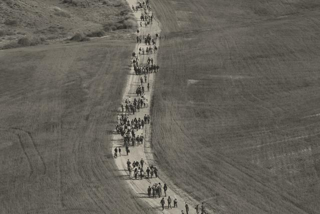
7 באוקטובר · נושא
ברגע האמת בחרנו לקום ולעשות
היום שבו הכול השתנה. כאן נאספים העדויות והזיכרונות של הקהילות שלנו, בקצב שלהן ובמילים שלהן.
לעדויות ולסיפורים
עשור בפוקוס · עשור
מהמרכז ללימודי מבוגרים למכללת ספיר
ב-1963 עבר בית הספר למבוגרים מהצריפים לבית הספר האזורי, והתפתח בהדרגה למכללה האקדמית ספיר.
לכל הסיפורים של שנות ה-60פרסומים אחרונים
המאמרים, הגלריות והתיעוד שעלו לאחרונה לארכיון
12 הקהילות
לאן תרצו להגיע היום?
- קהילהדורות 1941, נוסדה ב-1941לעמוד הקהילה
- קהילהניר עם 1943, נוסדה ב-1943לעמוד הקהילה
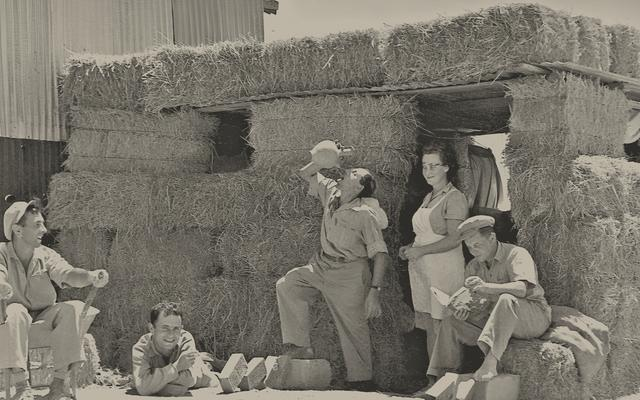
קהילהרוחמה 1944, נוסדה ב-1944לעמוד הקהילה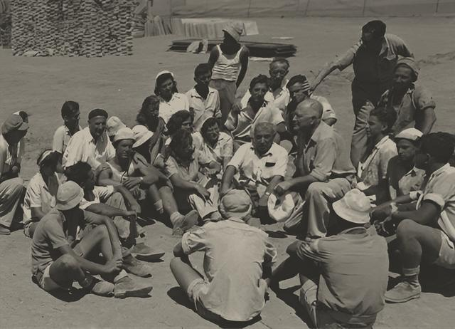
קהילהגבים 1947, נוסדה ב-1947לעמוד הקהילה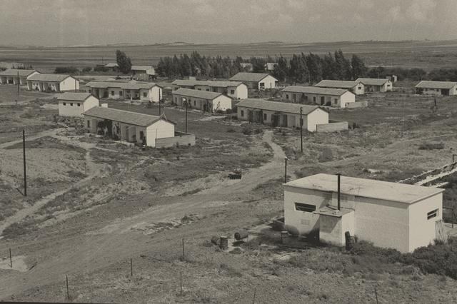
קהילהאיבים 1947, נוסדה ב-1947לעמוד הקהילה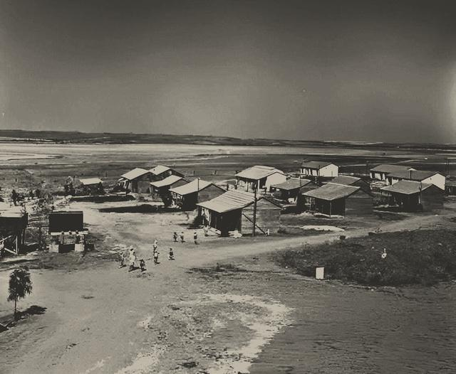
קהילהברור חיל 1948, נוסדה ב-1948לעמוד הקהילה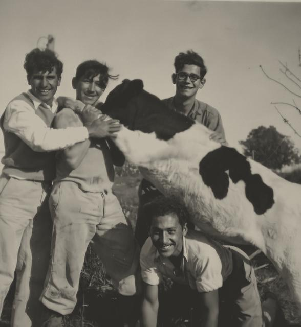
קהילהארז 1949, נוסדה ב-1949לעמוד הקהילה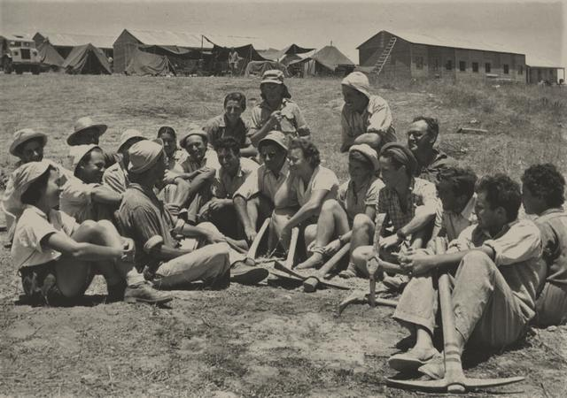
קהילהמפלסים 1949, נוסדה ב-1949לעמוד הקהילה- קהילהיכיני 1950, נוסדה ב-1950לעמוד הקהילה
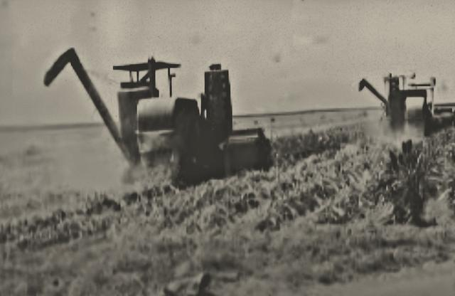
קהילהכפר עזה 1951, נוסדה ב-1951לעמוד הקהילה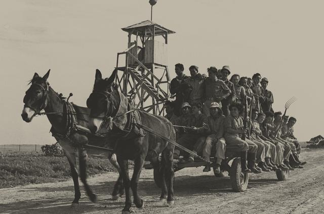
קהילהנחל עוז 1951, נוסדה ב-1951לעמוד הקהילה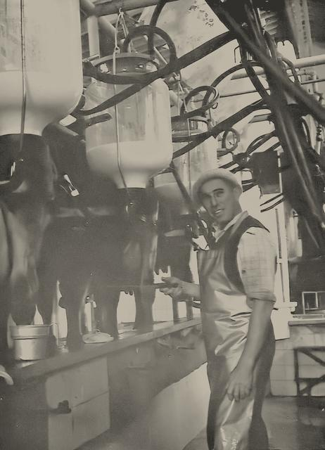
קהילהאור הנר 1957, נוסדה ב-1957לעמוד הקהילה